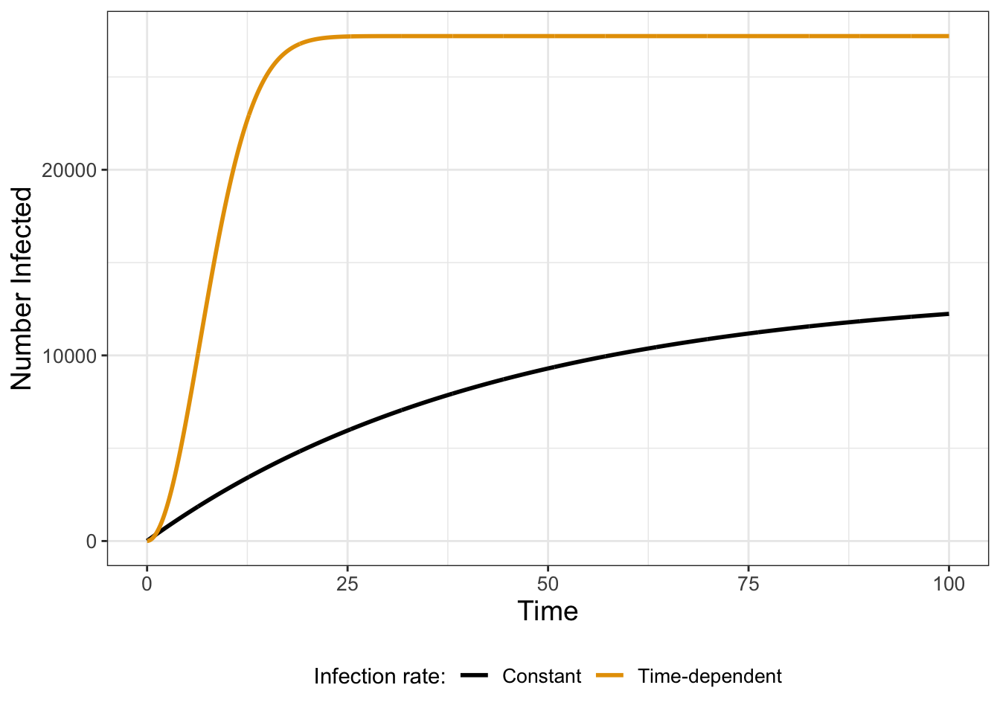

7 Exact Solutions to Differential Equations
Chapters 4, 5, and 6 studied numerical and qualitative tools to analyze differential equations. Phase planes and slope fields helped to determine the long-term stability of an equilibrium solution. Beyond these approaches, it is also helpful to know the exact solution to a differential equation. In this chapter we will study three techniques to determine exact solutions to differential equations, making connections to some tools that you know from calculus. We briefly illustrate the methods but also have lots of exercises for you to practice these techniques, with problems in and out of a given context. Let’s get started!
7.1 Verify a solution
The first approach is direct verification also known as the guess and check method. Consider the differential equation shown in Equation 7.1:
\[ \frac{dS}{dt} = 0.7 S \tag{7.1}\]
Direct verification starts with a candidate solution and then checks to see if the candidate solution is consistent with the differential equation. If we have an initial value problem (e.g. \(S(0)=4\)), then the candidate solution is also consistent with the initial condition.
For example, let’s verify if the function \(\tilde{S}(t) = 5 e^{0.7t}\) is a solution to Equation 7.1. We do this by differentiating \(\tilde{S}(t)\), which, using our knowledge of calculus, is \(0.7 \cdot 5 e^{0.7t}\). Finally, by rearrangement, \(\displaystyle \frac{d\tilde{S}}{dt} = 0.7 \cdot 5 e^{0.7t} = 0.7 e^{0.7t}\). Therefore the function \(\tilde{S}\) is a solution to the differential equation. Let’s build off this to try other candidate functions:
Example 7.1 Verify if the following functions are solutions to Equation 7.1:
- \(\tilde{R}(t) = 10e^{0.7t}\)
- \(\tilde{P}(t) = e^{0.7t}\)
- \(\tilde{Q}(t) = 5e^{0.7t}\)
- \(\tilde{F}(t)=3\)
- \(\tilde{G}(t)=0\)
Solution 7.1. First apply direct differentiation to each of these functions (this represents the left hand side of each differential equation):
- \(\tilde{R}(t) = 10e^{0.7t} \rightarrow \tilde{R}'(t) = 7e^{0.7t}\)
- \(\tilde{P}(t) = e^{0.7t} \rightarrow \tilde{P}'(t) = 0.7e^{0.7t}\)
- \(\tilde{Q}(t) = 5e^{0.7t} \rightarrow \tilde{Q}'(t) = 3.5e^{0.7t}\)
- \(\tilde{F}(t)=3 \rightarrow \tilde{F}'(t) = 0\)
- \(\tilde{G}(t)=0 \rightarrow \tilde{G}'(t) = 0\)
Next compare each of these solutions to the right hand side of Equation 7.1:
- \(0.7\tilde{R}(t) = 0.7 \cdot 10e^{0.7t} \rightarrow 7e^{0.7t}\)
- \(0.7\tilde{P}(t) = 0.7 e^{0.7t}\)
- \(0.7\tilde{Q}(t) = 0.7 \cdot 5e^{0.7t} \rightarrow = 3.5e^{0.7t}\)
- \(0.7 \tilde{F}(t)=0.7 \cdot 3 \rightarrow 2.1\)
- \(0.7 \tilde{G}(t)=0.7 \cdot 0 \rightarrow 0\)
Notice how in the candidate functions (with the exception of \(\tilde{F}(t)\)) the right hand side of each equation equals the left hand side. When that is the case, our candidate functions are indeed solutions to Equation 7.1!
Verifying a solution to a differential equation relies on your knowledge of differentiation versus other more involved methods, which may be an under-appreciated approach. In some instances you may not be given a candidate function as in Example 7.1. Deciding “what function to try” is the hardest step, but a safe bet would be an exponential equation (especially if the right hand side involves the dependent variable). As we will see in Chapter 18 the guess and check approach will help us to determine general solutions to systems of linear differential equations.
7.1.1 Superposition of solutions
Related to the verification method is a concept called superposition of solutions. Here is how this works: if you have two known solutions to a differential equation, then the sum (or difference) is a solution as well. Let’s look at an example:
Example 7.2 Show that \(\tilde{R}(t) + \tilde{Q}(t) = 5e^{0.7t} + e^{0.7t}\) from Example 7.1 is a solution to Equation 7.1.
Solution 7.2. By direct differentiation, \(\tilde{R}'(t) + \tilde{Q}'(t) = 3.5e^{0.7t} + 0.7e^{0.7t}\). Furthermore, \(0.7 \cdot (\tilde{R}(t) + \tilde{Q}(t)) = 0.7 \cdot (5e^{0.7t} + e^{0.7t}) = 3.5 e^{0.7t} + 0.7 e^{0.7t}\), which equals \(\tilde{R}'(t) + \tilde{Q}'(t)\).
Example 7.2 illustrates the principle that different solutions to a differential equation can be added together and produce a new solution. More generally, adding two solutions together is an example of a linear combination of solutions, and we can state this more formally:
If \(x(t)\) and \(y(t)\) are solutions to the differential equation \(z' = f(t,z)\), then \(c(t) = a \cdot x(t) + b \cdot y(t)\) are also solutions, where \(a\) and \(b\) are constants.
7.2 Separable differential equations
The next techninque is called separation of variables. This method has a defined workflow (Separate \(\rightarrow\) Integrate \(\rightarrow\) Solve), which we illustrate by considering the following differential equation:
\[ \frac{dy}{dt} = yt^{2} \tag{7.2}\]
Separate: This step uses algebra to collect variables involving \(x\) on one side of the equation, and the variables involving \(y\) on the other (Equation 7.3):
\[ \frac{1}{y} dy = t^{2} \; dt \tag{7.3}\]
Integrate: This step computes the antiderivative of both sides of Equation 7.3:
\[ \begin{split} \int \frac{1}{y} dy = \ln(y) + C_{1}. \\ \int t^{2} \; dt = \frac{1}{3} t^{3} + C_{2} \end{split} \tag{7.4}\]
You may remember from calculus that whenever you compute antiderivatives to always include a \(+C\) (hence the \(C_{1}\) and \(C_{2}\) in Equation 7.4). For separable differential equations it is okay just to keep only one of the \(+C\) terms in Equation 7.4, which usually is best on the side of the independent variable (in this case \(t\)). Since both sides of the separated equation are equal, we can rewrite Equation 7.4 on a single line (Equation 7.5):
\[ \ln(y) = \frac{1}{3} t^{3} + C \tag{7.5}\]
Solve: This last step solves Equation 7.5 for the dependent variable \(y\):
\[ \ln(y) =\frac{1}{3} t^{3} + C \rightarrow e^{\ln(y)} = e^{\frac{1}{3} t^{3} + C} = e^{C} \cdot e^{\frac{1}{3} t^{3}} \rightarrow y = Ce^{\frac{1}{3} t^{3}} \tag{7.6}\]
We are in business! Notice how in Equation 7.6 at each step we just kept the constant to be \(C\), since exponentiating a constant will still be constant.
To summarize, the workflow for the separating of variables technique is the following:
- Separate the variables on one side of the equation.
- Integrate both sides individually.
- Solve for the dependent variable.
7.3 Integrating factors
Chapters 1 and 4 examined a model for the spread of Ebola where that was proportional to the number infected:
\[ \frac{dI}{dt} = .023(13600-I) = 312.8 - .023I \tag{7.7}\]
While Equation 7.7 can be solved via separation of variables, let’s try a different approach to illustrate another useful technique. First let’s write the terms in Equation 7.7 that involve \(I\) on one side of the equation:
\[ \frac{dI}{dt} + .023I = 312.8. \tag{7.8}\]
What we are going to do is multiply both sides of this Equation 7.8 by \(e^{.023t}\) (I’ll explain more about that later):
\[ \frac{dI}{dt} \cdot e^{.023t} + .023I \cdot e^{.023t} = 312.8 \cdot e^{.023t} \tag{7.9}\]
Hmmm - this seems like we are making the differential equation harder to solve, doesn’t it? However the left hand side of Equation 7.9 is actually the derivative of the expression \(I \cdot e^{.023t}\) (courtesy of the product rule from calculus). Let’s take a look:
\[ \frac{d}{dt} \left( I \cdot e^{.023t} \right) = \frac{dI}{dt} \cdot e^{.023t} + I \cdot .023 e^{.023t} \tag{7.10}\]
Equation 7.10 allows us to express the left hand side of Equation 7.9 as a derivative and then integrate both sides:
\[ \begin{split} \frac{d}{dt} \left( I \cdot e^{.023t} \right) &= 312.8 \cdot e^{.023t} \rightarrow \\ \int \frac{d}{dt} \left( I \cdot e^{.023t} \right) \; dt &= \int 312.8 \cdot e^{.023t} \; dt \rightarrow \\ I \cdot e^{.023t} &= 13600 \cdot e^{.023t} + C \end{split} \tag{7.11}\]
All that is left to do is to solve Equation 7.11 in terms of \(I(t)\) by dividing by \(e^{.023t}\), labeled as \(I_{1}(t)\) (Equation 7.12):
\[ I_{1}(t) = 13600 + Ce^{-.023t} \tag{7.12}\]
Cool! The function \(f(t)=e^{.023t}\) is called an integrating factor. Let’s explore this technique with a second example:
Example 7.3 Apply the integrating factor technique to determine a general solution to the differential equation:
\[ \frac{dI}{dt} = .023t (13600-I) = 312.8 t - .023 t \cdot I \tag{7.13}\]
(Equation 7.13 is a modification of Equation 7.7, where the rate of infection is time dependent.)
Solution 7.3. Re-writing Equation 7.13 we have:
\[ \frac{dI}{dt} + .023 t \cdot I = 312.8 t \tag{7.14}\]
To write the left hand side of Equation 7.14 as the derivative of a product of functions, multiply the entire differential equation by \(\displaystyle e^{\int .023t \; dt} = e^{.0115 t^{2}}\). This term is called the integrating factor (Equation 7.15):
\[ \frac{dI}{dt} \cdot e^{ .0115 t^{2}} + .023 t \cdot I \cdot e^{0.0115 t^{2}} = 312.8 t \cdot e^{0.0115 t^{2}} \tag{7.15}\]
Rewrite the left hand side of Equation 7.15 with the product rule:
\[ \frac{dI}{dt} \cdot e^{ 0.0115 t^{2}} + .023 t \cdot I \cdot e^{0.0115 t^{2}} = \frac{d}{dt} \left( I \cdot e^{0.0115 t^{2}} \right) \tag{7.16}\]
Next integrate Equation 7.16:
\[ \begin{split} \frac{d}{dt} \left( I \cdot e^{.0115 t^{2}} \right) &= 312.8 t \cdot e^{.0115 t^{2}} \rightarrow \\ \int \frac{d}{dt} \left( I \cdot e^{.0115 t^{2}} \right) \; dt &= \int 312.8t \cdot e^{.0115 t^{2}} \; dt \rightarrow \\ I \cdot e^{0.0115 t^{2}} &= 27200 \cdot e^{.0115 t^{2}} + C \end{split} \tag{7.17}\]
The final step is to write the Equation 7.17 in terms of \(I(t)\); we will label this solution as \(I_{2}(t)\):
\[ I_{2}(t) = 27200 + C e^{-.0115 t^{2}} \tag{7.18}\]
Figure 7.1 compares the solutions \(I_{1}(t)\) and \(I_{2}(t)\) when the initial condition (in both cases) is 10 (so \(I_{1}(0)=I_{2}(0)=10\)). Notice how the extra time-dependent factor in Equation 7.13 makes the cases grow quickly before leveling off.
The integrating factor approach can be applied for differential equations that can be written in the form \(\displaystyle \frac{dy}{dt} + f(t) \cdot y = g(t)\), using the following workflow:
- Determine the integrating factor \(\displaystyle e^{\int f(t) \; dt}\). Hopefully the integral \(\displaystyle \int f(t) \; dt\) is easy to compute!
- Multiply the integrating factor across your equation to rewrite the differential equation as \(\displaystyle \frac{d}{dt} \left( y \cdot e^{\int f(t) \; dt} \right) = g(t) \cdot e^{\int f(t) \; dt}\).
- Evaluate the integral \(\displaystyle H(t) = \int g(t) \cdot e^{\int f(t) \; dt} \; dt\). This looks intimidating - but hopefully is manageable to compute! Don’t forget the \(+C\)!
- Solve for \(y(t)\): \(\displaystyle y(t) = H(t) \cdot e^{-\int f(t) \; dt} + C e^{-\int f(t) \; dt}\).
7.4 Applying the verification method to coupled equations
Finally, the method of verifying a solution helps to introduce a useful solution technique for systems of differential equations. We are going to study a simplified version of the lynx-hare model from Chapter 6. Equation 7.19 assumes both lynx and hares decline at a rate proportional to their respective population sizes, with the decline in the lynx population representing predation:
\[ \begin{split} \frac{dH}{dt} &= -b H \\ \frac{dL}{dt} & = b H - d L \end{split} \tag{7.19}\]
Based on these simplified assumptions a good approach is to assume a solution that is exponential for both \(H\) and \(L\) (Equation 7.20):
\[ \begin{split} \tilde{H}(t) &= C_{1} e^{\lambda t} \\ \tilde{L}(t) &= C_{2} e^{\lambda t} \end{split} \tag{7.20}\]
Notice that Equation 7.20 has \(C_{1}\), \(C_{2}\), and \(\lambda\) as parameters.1 Let’s apply the verification method to determine expressions for \(C_{1}\), \(C_{2}\), and \(\lambda\) that are consistent with Equation 7.19. By differentiation of Equation 7.20, we have the following (Equation 7.21):
\[ \begin{split} \frac{d\tilde{H}}{dt} &= \lambda C_{1} e^{\lambda t} \\ \frac{d\tilde{L}}{dt} &= \lambda C_{2} e^{\lambda t} \end{split} \tag{7.21}\]
Comparing Equation 7.21 to Equation 7.19 we can show that
\[ \begin{split} \lambda C_{1} e^{\lambda t} &= - b C_{1} e^{\lambda t} \\ \lambda C_{2} e^{\lambda t} &= b C_{1} e^{\lambda t} - d C_{2} e^{\lambda t} \end{split} \tag{7.22}\]
Let’s rearrange Equation 7.21 some more:
\[ \begin{split} (\lambda + b) C_{1} e^{\lambda t} &= 0\\ (\lambda + d) C_{2} e^{\lambda t} &=b C_{1} e^{\lambda t} \end{split} \tag{7.23}\]
Notice that for the second expression in Equation 7.23 we can express \(\displaystyle C_{1} e^{\lambda t}\) as \(\displaystyle\frac{(\lambda + d)}{b} C_{2} e^{\lambda t}\). Next, we can substitute this expression for \(C_{1} e^{\lambda t}\) into the first expression of Equation 7.23:
\[ (\lambda + b) \frac{(\lambda + d)}{b} C_{2} e^{\lambda t} = 0 \]
If we assume that \(b \neq 0\), then we have the following simplified expression (Equation 7.24):
\[ (\lambda +b) (\lambda +d) C_{2} e^{\lambda t} = 0 \tag{7.24}\]
Because the exponential function in Equation 7.24 never equals zero, the only possibility is that \((\lambda + b)(\lambda + d)=0\), or that \(\lambda = -b\) or \(\lambda = -d\).2
Next we need to determine values of \(C_{1}\) and \(C_{2}\). We can do this by going back to the the second expression in Equation 7.22, which we rearrange to Equation 7.25:
\[ (\lambda + d) C_{2} e^{\lambda t} -b C_{1} e^{\lambda t}=0 \tag{7.25}\]
Let’s analyze Equation 7.25 for each of the values of \(\lambda\):
- Case \(\lambda = -d\)
For this case we have Equation 7.26:
\[ (-d +d) C_{2} e^{-d t} - b C_{1} e^{-d t} =0 \rightarrow -b C_{1} e^{-d t} =0 \tag{7.26}\]
The only way for Equation 7.26 to be consistent and remain zero is if \(C_{1}=0\). We don’t have any restrictions on \(C_{2}\), so the general solution is given with Equation 7.27:
\[ \begin{split} \tilde{H}(t) &=0 \\ \tilde{L}(t) &= C_{2} e^{-d t} \end{split} \tag{7.27}\]
- Case \(\lambda = -d\) For this situation, Equation 7.25 becomes Equation 7.28:
\[ \left( (-d +b) C_{2} - d C_{1} \right) e^{-d t} =0 \tag{7.28}\]
The only way for Equation 7.28 to be consistent is if \(\left( (-d +b) C_{2} - d C_{1} \right)=0\), or if \(\displaystyle C_{2} = \left( \frac{d}{-d + b} \right) C_{1}\). In this case, Equation 7.29 then represents the general solution:
\[ \begin{split} \tilde{H}(t) &= C_{1} e^{-d t} \\ \tilde{L}(t) &= \left( \frac{d}{-d + b} \right) C_{1} e^{-d t} \end{split} \tag{7.29}\]
The parameter \(C_{2}\) in Equation 7.29 can be determined by the initial condition. Notice that we need to have \(d \neq b\) or our solution will be undefined.
Finally we can write down a general solution to Equation 7.19 by combining our Equations 7.27 and 7.29 by superposition (Equation 7.30):
\[ \begin{split} H(t) &= C_{1} e^{-d t} \\ L(t) &= \left( \frac{d}{-d + b} \right) C_{1} e^{-d t} + C_{2} e^{-b t} \end{split} \tag{7.30}\]
The method outlined here only works on linear differential equations (i.e. it wouldn’t work if there was a term such as \(kHL\) in Equation 7.19). In Chapter 18 explores this method more systematically to determine general solutions to linear systems of equations.
As you can see, there are a variety of techniques that can be applied in the solution of differential equations. Many more solution techniques exist - but by and large the techniques presented here probably will be your “go-tos” when working to find an exact solution to a differential equation.
7.5 Exercises
Exercise 7.1 Determine the value of \(C\) when \(I(0)=10\) for the two equations:
\[ \begin{split} I_{1}(t) = 1000 + Ce^{-.03t} \\ I_{2}(t) = 1000 + C e^{-0.015 t^{2}} \end{split} \]
Exercise 7.2 Solve Equation 7.7 using the separation of variables technique.
Exercise 7.3 Verify that \(I_{2}(t) = N + C e^{-0.5 k t^{2}}\) is the solution to the differential equation \(\displaystyle \frac{dI}{dt} = kt (N-I)\). Set \(N=3\) and \(C=1\). Plot \(I_{2}(t)\) with various values of \(k\) ranging from .001 to .1. What effect does \(k\) have on the solution?
Exercise 7.4 Consider the following model of an infection:
\[ \begin{split} \frac{dS}{dt} &= -k SI \\ \frac{dI}{dt} &= k SI - \beta I \end{split} \]
Use this equation to solve the following questions:
- Show that \(\displaystyle \frac{I'}{S'} = -1 + \frac{\beta}{k} \frac{1}{S}\), where \(\displaystyle S'=\frac{dS}{dt}\) and \(\displaystyle I'=\frac{dI}{dt}\). We will call \(\displaystyle \frac{I'}{S'} = \frac{dI}{dS}\).
- Using separation of variables, show that the general solution to \(\displaystyle \frac{I'}{S'} = -1 + \frac{\beta}{k} \frac{1}{S}\) is \(\displaystyle I(S) = -S + \frac{\beta}{k} \ln (S) + C\).
- At the beginning of the epidemic, \(S_{0}+I_{0} = N\), where \(N\) is the total population size. Use this fact to determine \(C\) in the equation \(\displaystyle I_{0} = - S_{0} + \frac{\beta}{k} \ln (S_{0}) + C\).
- Using your previous answer, show that \(\displaystyle I(S) = N- S + \frac{\beta}{k} \ln \left(\frac{S}{S_{0}} \right)\).
- Plot a solution curve for \(I(S)\) with \(\beta = 1\), \(k=0.1\), \(N=100\), and \(S_{0}=5\).
Exercise 7.5 (Inspired by Scholz and Scholz (2014)) A chemical reaction \(2A \rightarrow C + D\) can be modeled with the following differential equation:
\[ \frac{dA}{dt} = -2 k A^{2} \]
Apply the method of separation of variables to determine a general solution for this differential equation.
Exercise 7.6 (Inspired by Berg (2011)) Organisms that live in a saline environment biochemically maintain the amount of salt in their blood stream. An equation that represents the level of \(S\) in the blood is the following:
\[ \frac{dS}{dt} = I + p \cdot (W - S) \]
where the parameter \(I\) represents the active uptake of salt, \(p\) is the permeability of the skin, and \(W\) is the salinity in the water. For this problem, set \(I = 0.1\) (10% / hour), \(p = 0.05\) hr\(^{-1}\), \(W = 0.4\) (40% salt concentration), and \(S(0)=0.6\) (60% salt concentration).
- Generate a slope field of the differential equation \(\displaystyle \frac{dS}{dt} = 0.1 + 0.05 \cdot (.6 - S)\).
- Apply integrating factors to solve the differential equation \(\displaystyle \frac{dS}{dt} = 0.1 + 0.05 \cdot (.6 - S)\).
- Does your solution conform to the slope field diagram?
Exercise 7.7 A rumor is spreading through a population of \(N\) people, with people who are unaware \(U\) of the rumor, and \(R\) the people who spread the rumor. A system of differential equations that describes the spread of the rumor through the population is:
\[ \begin{split} \frac{dU}{dt} &= -U\cdot R \\ \frac{dR}{dt} &= R \cdot (2U - N) \end{split} \]
- Show that \(\displaystyle \frac{R'}{U'} = \frac{dR}{dU}= -2 + \frac{N}{U}\).
- Through direct integration, determine a solution \(R(U)\), with initial condition \(R(N)=1\).
- Set \(N=100\). Sketch a curve of \(R(U)\).
Exercise 7.8 Which of the following differential equations can be solved via separation of variables?
- \(\displaystyle \frac{dy}{dx} = x^{2} + xy\)
- \(\displaystyle \frac{dy}{dx} = e^{x+y}\)
- \(\displaystyle \frac{dy}{dx} = y \cdot \cos(2+x)\)
- \(\displaystyle \frac{dy}{dx} = \ln x + \ln y\)
- \(\displaystyle \frac{dy}{dx} = x \cdot (y^{2}+2)\)
Once you have identified which ones can be solved via separation of variables, apply that technique to solve each differential equation.
Exercise 7.9 Consider the following differential equation \(\displaystyle \frac{dP}{dt} = - \delta P\), \(P(0)=P_{0}\), where \(\delta\) is a constant parameter.
- Solve this equation using the method of separation of variables.
- Solve this equation using an integrating factor.
- Your two solutions from the two methods should be the same - are they?
Exercise 7.10 A differential equation that relates a consumer’s nutrient content (denoted as \(y\)) to the nutrient content of food (denoted as \(x\)) is given by:
\[ \frac{dy}{dx} = \frac{1}{\theta} \frac{y}{x}, \]
where \(\theta \geq 1\) is a constant. Apply separation of variables to determine the general solution to this differential equation.
Exercise 7.11 Apply separation of variables to determine general solutions to the following systems of differential equations:
\[ \begin{split} \frac{dx}{dt} &= x \\ \frac{dy}{dt} &= y \end{split} \tag{7.31}\]
(Equation 7.31 is an example of an uncoupled system of equations.)
Exercise 7.12 (Inspired by Olinick (2014)) A rumor is spreading through a population of \(N\) people, with people who are unaware \(U\) of the rumor, and \(R\) the people who spread the rumor. A system of differential equations that describes the spread of the rumor through the population is:
\[ \begin{split} \frac{dU}{dt} &= -U\cdot R \\ \frac{dR}{dt} &= R \cdot (2U - N) \end{split} \]
- Show that \(\displaystyle \frac{R'}{U'} = \frac{dR}{dU}= -2 + \frac{N}{U}\).
- Through direct integration, determine a solution \(R(U)\), with initial condition \(R(N)=1\).
- Set \(N=100\). Sketch a curve of \(R(U)\).
Exercise 7.13 (Inspired by Thornley and Johnson (1990)) A plant grows proportional to its current length \(L\). Assume this proportionality constant is \(\mu\), whose rate also decreases proportional to its current value. The system of equations that models this plant growth is the following:
\[ \begin{split} \frac{dL}{dt} = \mu L \\ \frac{d\mu}{dt} = -k \mu \\ \mbox{($k$ is a constant parameter)} \end{split} \]
Apply separation of variables to determine the general solutions to this system of equations.
Exercise 7.14 Apply the verification method developed in Section 7.1 to determine the general solution to the following system of differential equations:
\[ \begin{split} \frac{dx}{dt} &= x-y \\ \frac{dy}{dt} & = 2y \end{split} \]
Exercise 7.15 Apply the integrating factors technique to determine the solution to the differential equation \(\displaystyle \frac{dI}{dt} = (N-I) = kN - kI\), where \(k\) and \(N\) are parameters.
Exercise 7.16 For each of the following differential equations:
- Determine equilibrium solutions for the differential equation.
- Apply separation of variables to determine general solutions to the following differential equations.
- Choose reasonable values of any parameters and plot the solution curve for an initial condition that you select.
\(\displaystyle \frac{dy}{dx} = -\frac{x}{y}\)
\(\displaystyle \frac{dy}{dx} = 8-y\)
\(\displaystyle \frac{dW}{dt} = k (N-W)\) (\(k\) and \(N\) are constant parameters)
\(\displaystyle \frac{dR}{dt} =-aR \ln \frac{R}{K}\) (\(a\) and \(K\) are constant parameters)
Exercise 7.17 Consider the following differential equation, where \(M\) represents a population of mayflies and \(t\) is time (given in months), and \(\delta\) is a mortality rate (units % mayflies / month):
\[ \frac{dM}{dt} = - \delta \cdot M \]
Determine the general solution to this differential equation and plot a few different solution curves with different values of \(\delta>0\). Assume that \(M(0) = 10,000\). Describe the effect of changing \(\delta\) on your solution.
Exercise 7.18 An alternative model of mayfly mortality is the following:
\[ \displaystyle \frac{dM}{dt} = - \delta(t) \cdot M, \] where \(\delta(t)\) is a time dependent mortality function. Determine a solution and plot a solution curve (assuming \(M(0)=10,000\) and over the interval from \(0 \leq t \leq 5\), assuming time is scaled appropriately) for this differential equation when \(\delta(t)\) has the following forms:
- \(\delta(t) = 1\)
- \(\delta(t) = 2t\)
- \(\delta(t) = 1-e^{-t}\)
- \(\delta(t) = 1+e^{-t}\)
Provide a reasonable biological explanation justifying the use of these alternative mayfly models.
Berg, Hugo van den. 2011. Mathematical Models of Biological Systems. Oxford, New York: Oxford University Press.
Olinick, Michael. 2014. Mathematical Modeling in the Social and Life Sciences. Hoboken, NJ: Wiley.
Scholz, Gudrun, and Fritz Scholz. 2014. “First-Order Differential Equations in Chemistry.” ChemTexts 1 (1): 1. https://doi.org/10.1007/s40828-014-0001-x.
Thornley, John H. M., and Ian R. Johnson. 1990. Plant and Crop Modelling: A Mathematical Approach to Plant and Crop Physiology. Caldwell, New Jersey: Blackburn Press.
If you have taken a course in linear algebra, you may recognize that we are assuming the solution is a vector of the form \(\vec{v} = \vec{C} e^{\lambda t}\).↩︎
Remember: if expressions multiply to zero, then the only possibility is that at least one of them is zero. The process outlined here finds the eigenvalues and eigenvectors of a system of equations. We will study these concepts in Chapter 18.↩︎